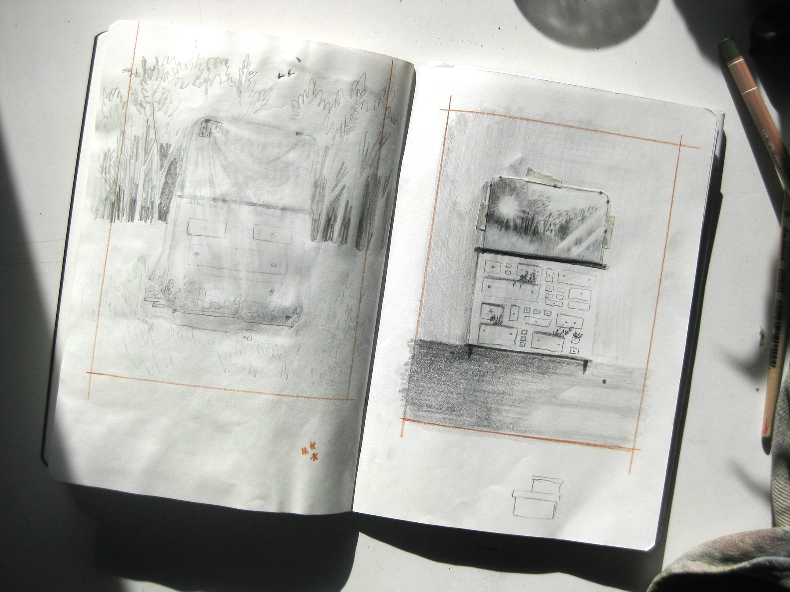

Studio a matita sul tema della casa, in cui compaiono elementi autobiografici: il prato che ospita l'apiario e la cassettiera della camera della madre nella casa di montagna della nonna. L'uso della matita, rispetto al colore, permette di raggiungere un'intimità maggiore, creando un dialogo più raccolto e profondo tra memoria e paesaggio domestico.
